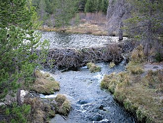
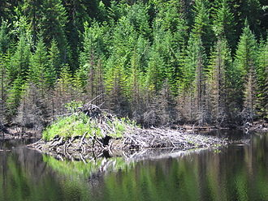
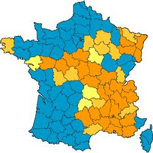

Leurs barrages et leurs huttes sont construits avec du bois mort ou récemment coupé par eux. Pour cela le castor abat principalement des arbres à bois tendre tels le bouleau, le saule, le peuplier (le tremble notamment) mais il coupe parfois aussi des bois plus durs comme le chêne ou le frêne et plus rarement des résineux. Les interstices entre les morceaux de bois peuve être colmatés avec de la pierre, de la boue, de la tourbe, des touffes de racines, des feuilles ou encore de la terre qu'il tasse avec ses mains (et non pas avec la queue qu'il utiliserait comme une truelle comme on l'a longtemps cru ou raconté).
Le barrage peut atteindre plus de 75 mètres de long et plus de 1 mètre de haut.
 
Lorsqu'un territoire est épuisé, la famille se déplace pour chercher une nouvelle zone riche en nourriture. Les berges délaissées se reboiseront progressivement pour redonner après quelques années un nouveau territoire nourrissant. Lorsque les petits sont chassés de la cellule familiale, ils partent à la recherche de nouvelles zones à coloniser, et d'un(e) partenaire pour fonder une nouvelle famille.
Le castor est monogame. Il reste fidèle à sa partenaire tout au long de sa vie. La maturité sexuelle arrive vers l'âge de trois ans, moment auquel les jeunes castors sont alors chassés de leur cellule familiale. L'accouplement a lieu dans l'eau entre janvier et février/mars chez les deux espèces, après quoi la gestation dure un peu plus de cent jours. Une portée comporte généralement entre deux et quatre petits qui naissent avec une fourrure complète et les yeux ouverts, à l'intérieur de la hutte.
le castor vit dans une hutte, qui est généralement appuyée à la berge. Elle est construite avec des branches de bois et de la terre. Cette hutte est en général composée d'une entrée et de deux chambres. L'accès s'y fait essentiellement sous l'eau, mais la chambre principale est sous terre. Afin de renouveler l'air et de sécher la litière qu'il y amène, le castor intègre à sa hutte des conduits d'aération.
41 départements métropolitains sont concernés à des degrés divers par la présence du castor, essentiellement dans le Sud-est, le Centre et le Nord-est. Le Bassin rhodanien constitue le berceau originel de l'espèce à partir duquel de nombreuses réintroductions ont pu être engagées et réussies. Le castor est aussi présent sur la Loire et certains de ses affluents (Allier, Ardoux, Cher, Beuvron, Indre, Vienne...), sur le haut bassin du Tarn (Tarn, Dourbie...), sur le haut bassin de la Moselle (Moselle, Madon...) et sur le bassin du Rhin (Doller, Ill, Moder...). Des petites populations réintroduites existent dans le Finistère (Aulne, Ellez), dans le Languedoc (Vidourle), en Champagne (Der, Marne,...) et en Haute-Savoie sur les affluents des lacs d'Annecy et du Leman.
Voici une image de la répartion des castors en France.
